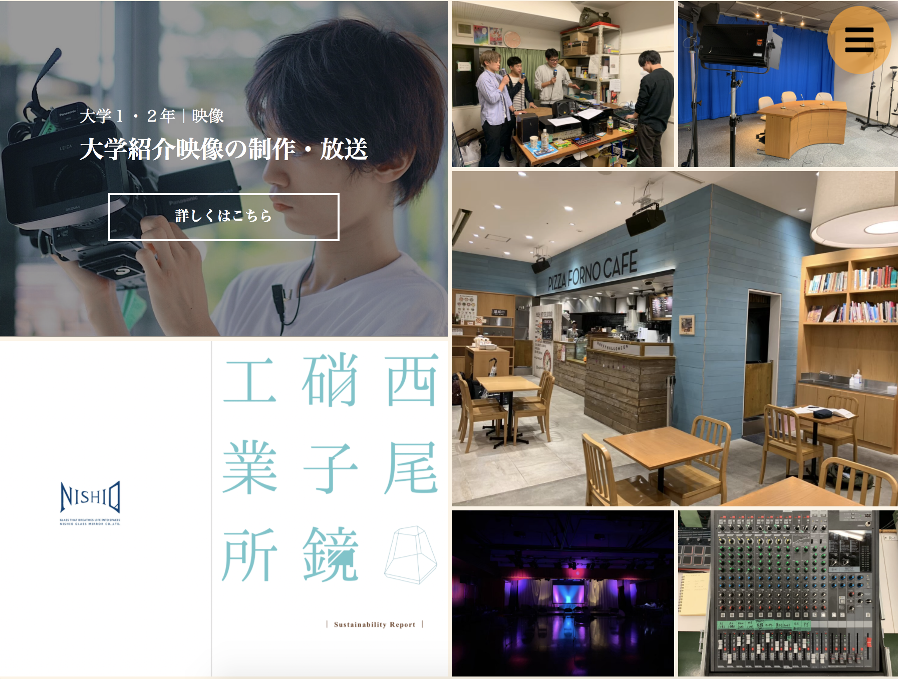

-
大学３・４年｜Web
Webデザイン・コーディングの学習
-

- 
-
大学３年の夏から、Webデザイン・プログラミングを独学で始めました。
Webサイトの学習
-
-
大学１〜２年で映像編集・ラジオ放送・取材調査など様々なメディアの企画・制作を経験し、大学３年次のステイホーム期間で新しい形の制作に挑戦したいと考えました。
そこで今まで触れたことがなかったWebサイト制作に注目し、HTML・CSSのコーディングとWebデザインを勉強し始めました。
-
-
-
コーディング
言語：HTML・CSS
Webサイト制作の導入として、htmlとcssを学習しました。まず書籍でWebサイトの仕組みとコーディングの基本を学び、デモサイトを制作しました。
その後、実際にサイトを作りながらコーディングの分からない部分を追加で調べて進めました。
HTML・CSSの基本的な使い方を覚えたので、今後はフレームワークの扱い方やJavaSprict・jQuery等を使ったエフェクトの作り方、システム・サーバーに関する言語について学んでいきたいと考えています。
-
-
-
-
デザイン・色彩
資格：色彩検定２級
学部横断ゼミでCSR報告書を制作する際に、色やフォントの与える印象・レイアウトの規則などを学びました。
またWebサイトについて勉強する中で、サイトと紙面のデザインの違いやUI・UXについて知り、さらにデザインに興味を持つようになりました。
そこでデザインの基本である色彩検定を受験し、２級を取得しました。
今までの制作で感覚的に選んでいた色について、効果や印象、配色技法など理論的に捉え直すことが出来ました。
-
-
-
webサイトの管理・運営
サイト：FMひがしくるめ
ソフト：WordPress
ボランティアスタッフをしているFMひがしくるめで、WordPressを使ったサイトの管理・運営をしています。 更新できるスタッフがおらず放置されていたため、勉強も兼ねて改修と運営に携わりました。
ページを分類毎に統合・整理し直し、無駄なページやリンクを減らしました。またナビゲーションやサイドを見直し、ページ間の移動をスムーズにしました。 まだ機能性・見た目ともに改善点が多いので、Word Pressの機能を覚えながら更新していきたいと思います。
-